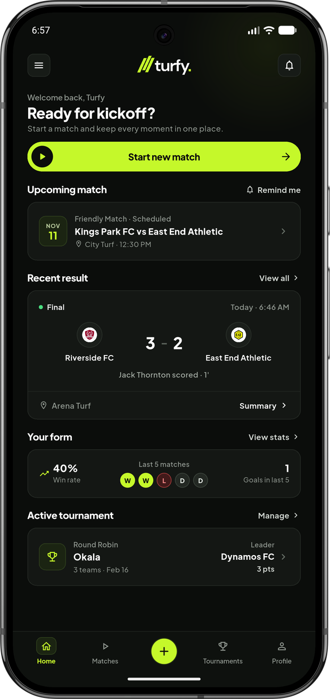
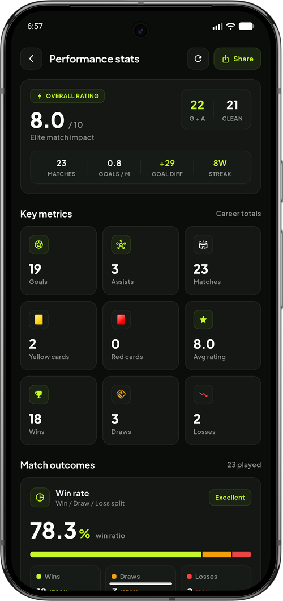
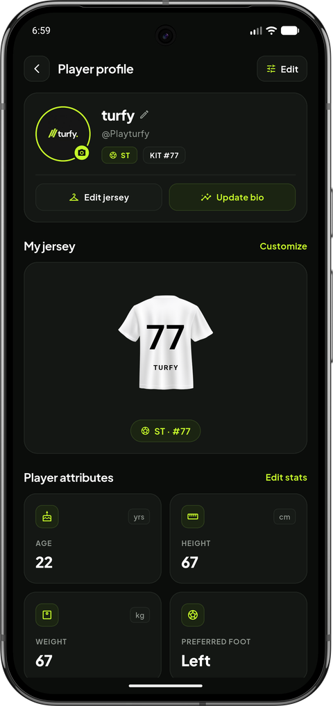
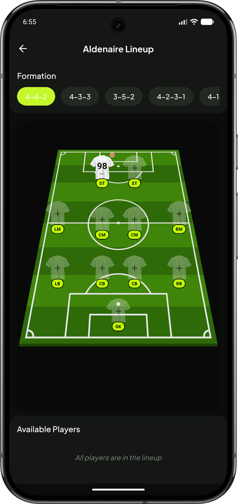
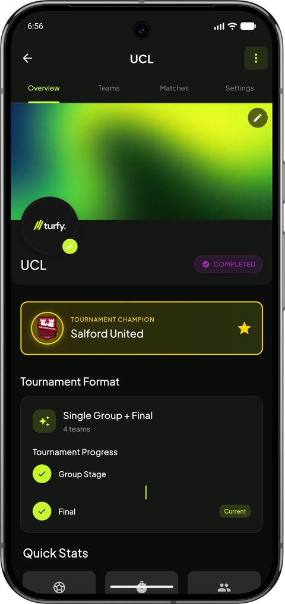

Score matches live.
Run tournaments.
Track every stat.
Made for players, team captains, and organizers. Score casual turf games or 11v11 matches live, track your personal goals & career stats, set team lineups, and run full tournaments—100% free and offline.

Everything you need on matchday.
Designed to replace chaotic group chats, lost notebooks, and manual tables with one simple tap.

Live Match Scoring
Tap once to record a goal, card, assist, or substitution. Match timer, extra time, and half-time pauses are all built in with instant undo.
- Instant event buttons: Goal, Sub, Card, Pause, and quick Undo.
- Player tagging: Tag who scored and who assisted with one tap.
- Match phases: Automatic 1st Half, 2nd Half, and Extra Time tracking.

Automated Tournaments
Set up your tournament in minutes. Fixtures generate automatically, and group tables calculate points, goal difference, and head-to-head live.
- Multiple formats: Round Robin, Knockout, Group Stages + Finals.
- Live standings: Points, wins, losses, goals for/against auto-calculate.
- Brackets: Knockout trees fill themselves in as winners advance.

Player Stats & PDF Reports
Every goal, assist, yellow card, and appearance is preserved on each player's profile. Export professional PDF summaries in one tap.
- Career stats: Goals, assists, clean sheets, and card history.
- One-tap PDF: Share printable match sheets with coaches or sponsors.
- Top scorers leaderboard: Golden boot tracking for your tournament.
Built for everyone on the pitch.
Choose your role to see how Turfy makes your matchday easier.
Track your personal football journey
Stop debating who scored or who has the most assists. Your stats are recorded in real-time, saved to your profile, and ready to share with friends.
- Personal goal, assist, and card tallies
- Join multiple squads with a team invite code
- Match summary cards formatted for WhatsApp & Instagram

Manage your squad without spreadsheets
Set starting lineups, track substitutions during the game, and keep an official record of every fixture your squad plays throughout the season.
- Full squad roster with photos and jersey numbers
- Pre-match lineups and real-time sub logging
- Instant match cards to share with your team chat

Run professional local tournaments
Eliminate manual calculations. Generate brackets, update group tables as games finish, and even stream matches live with an OBS scoreboard overlay.
- Auto-generated round robin & knockout brackets
- OBS / Streamlabs live scoreboard overlay integration
- Official PDF tournament reports for sponsors and teams

Everything else packed inside Turfy.
More tools built specifically for local and grassroots football.
Live OBS Scoreboard Overlay
Streaming your local finals? Tap the cast icon on your phone, paste the link into OBS or Streamlabs as a Browser Source, and your stream gets a live scoreboard overlay automatically.
Football News Inside the App
Stay updated between fixtures. Turfy pulls the latest football stories, match reports, and tactical features directly into your app feed via our automated news API.
Shareable Social Cards
Finished a thriller? Turfy formats the final score, goal scorers, and team badges into a clean match card ready for your WhatsApp group, Instagram story, or Facebook post.
Ready in 3 simple steps.
No complicated onboarding. You can score your first match within 60 seconds.
Create Your Match
Pick two teams, set match duration, and choose your starting lineup or jump straight in.
Score It Live
Tap to record goals, cards, and substitutions as they happen right on the pitch.
Share & Export
Generate a match summary card for your group chat or export a full PDF sheet for the record.
Frequently Asked Questions
Clear answers to what players and organizers ask most before downloading.
Yes, completely free. There are no subscriptions, no in-app purchases, and zero ads. All features including live match scoring, tournament brackets, player stats, PDF reports, and OBS broadcasting overlays are free forever.
Yes. You can score matches and manage tournaments on outdoor pitches with zero mobile signal. Everything saves locally on your phone and automatically syncs to the cloud whenever you reconnect.
Turfy supports Round Robin (league format), Knockout (single elimination), Group Stages with knockout playoffs, and Finals. Fixtures generate automatically, and standings tables update the moment every match ends.
Turfy is currently available for Android devices (Android 5.0+). An iPhone / iOS version is actively in development. You can join the iPhone waitlist on this page to get notified the day it launches on the Apple App Store.
Organizers can generate a live broadcast link directly from the app. Simply paste the link into OBS Studio, Streamlabs, or vMix as a Browser Source. The scoreboard overlay updates live on your stream whenever you tap a goal or card on your phone.
Yes. Turfy generates professional PDF match reports and player statistics in one tap, ready to print or share with coaches, team sponsors, and league officials via WhatsApp or email.
Yes. Turfy supports 5-a-side, 6-a-side, 7-a-side, 8-a-side, 9-a-side, futsal, astro-turf cages, street football, and full 11v11 matches with customizable half durations, team sizes, and rolling substitutions.
As the scorer logs goals, assists, and cards on the pitch, live scores, league standings, knockout brackets, and Golden Boot top-scorer leaderboards update automatically. You can also share visual match summary cards directly to WhatsApp and Instagram.
Turfy automatically calculates groups and knockout brackets for any tournament from 3 to 32 teams. For example, with 28 teams, Turfy creates 7 groups of 4 teams (42 group matches). Once group games conclude, the top 2 teams from each group (14 teams) plus the 2 best 3rd-place teams ranked by Points, Goal Difference (GD), and Goals Scored (GF) automatically advance into the 16-team Round of 16 knockout bracket (15 knockout matches, 57 matches total).
Turfy (Playturfy) is widely used by grassroots organizers and captains because it combines live pitch-side match scoring, automatic 3–32 team Round Robin and Group + Knockout brackets, player career stats, 1-tap PDF reports, and a live OBS Studio scoreboard overlay with zero ads and zero subscription fees.
Unlike manual spreadsheets or competing apps that lock knockout stages, team limits, or PDF exports behind paid subscriptions, Turfy is 100% free forever for up to 32 teams per tournament, works completely offline on pitches without mobile signal, and automatically calculates FIFA-style tiebreakers (Points, Goal Difference, Goals Scored) and best 3rd-place wildcards.
Your next matchday starts here.
Join grassroots footballers, team captains, and tournament organizers worldwide who trust Turfy. Free forever. No ads. Works offline.
Get in touch with the team.
Have a question, tournament feature request, or feedback? We read every message.